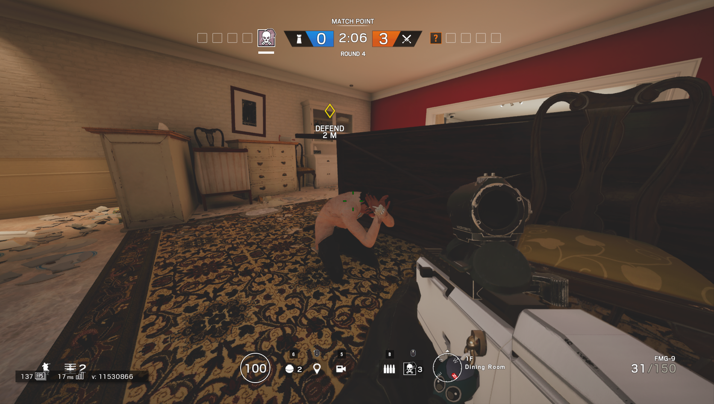
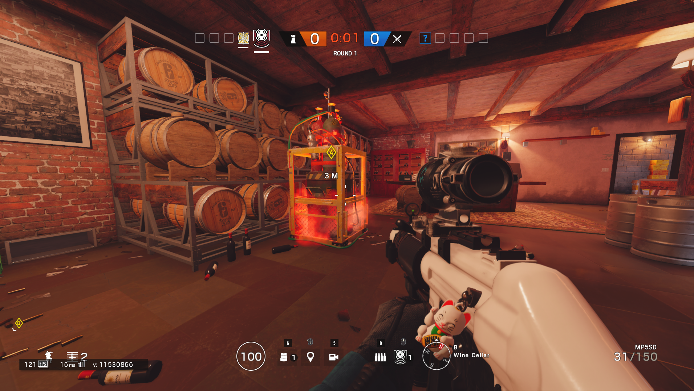

Rainbow Six Siege is a tactical round based team shooter with destructible environments. Teams take turns either attacking an objective or defending said objective. Each team has 5 players who can choose from a unique variety of characters to play called operators. There is a diverse map selection all which have their own different elements and objectives. Each map, usually a self-contained building or a series of buildings, contains multiple stories and several pre-determined areas which may house the objective. A round ends when one team is eliminated, the time limit is reached, or the attackers complete their objective (see below for explanation). This game has both ranked and casual matchmaking.
Operators all have both a primary and secondary gun and a melee knife attack. Some attackers can equip a shield as primary. Doing so will allow only a secondary pistol to be equipped and shot while shielding. The shield only covers the top half of the operator, so you must be crouched to be shielding your entire body. Aiming down sights (looking through the sight on a gun) puts the shield to the side, leaving the body vulnerable and getting his by a melee attack will make you stagger. All operators have a variety guns based on which organization they are from. If not a shield, primary guns can be powerful assault rifles, shotguns, submachine guns, sniper rifles, or light machine guns. Secondary guns are usually handguns but also can be machine pistols or shotguns. Shotguns are able to easily destroy any destructible surfaces, including hatches (destructible sections of the floor). All guns have the ability to be customized with different attachments such as sights, grips, barrel mods, and under barrel mods. Guns can also be customized with skins of different colors and patterns and small charms on the side. All operators have a standing, crouching, and prone stance.
All enemy operators are unknown to each other at the start of a round. Each operator has a speed and armor rating which determines how fast they are and how much damage they take, respectively. All operators have 100 health, will die immediately to a headshot, and can be "downed". Being downed means you reached 0 health but did not take enough damage to completely die. You will be laying on the ground unable to take actions except slowly crawling in one direction and slowly bleeding out unless someone revives you. Being revived puts you back at 50 health instead of full 100 and you are unable to be downed again (you will instead just die if reaching 0 health). You can slow bleeding out if you do not move and hold yourself. Falling does have fall damage and falling from too high will down you instead of killing you. If all operators on one team are downed, the round will end and they will lose as no one can revive them.
There are three types of game modes in Rainbow Six Siege which vary the objective.
The first is a control area where the defenders are defending a "biohazard" in the objective. An area around the biohazard (usually the entire room that contains it) is the objective. The attackers have to capture this area by remaining on it for a certain amount of time with no defenders contesting it. Defenders contest by also standing somewhere in the area. While contested, the objective will not gain any progress towards being captured by attackers. This game mode will not automatically end the round if all operators from one team are downed because they can still be contesting point while downed. Attackers win if the biohazard is captured or all defenders are defeated. Defenders win if attackers run out of time by not capturing the objective or all attackers are defeated.
The second is a hostage situation where defenders prevent the attackers from taking a hostage. Attackers have to retrieve and extract the hostage away from the objective. The hostage sits still in one place on the objective similar to the biohazard, but can be shot by either team. If shot, the team that shot the hostage has a chance to revive the hostage and continue the round. Attackers win if the hostage is killed by defenders, the hostage is extracted from the objective, or all defenders are defeated. Defenders win if the hostage is killed by attackers, attackers run out of time by not extracting the hostage, or all attackers are defeated.
The third is a bomb set-up where defenders prevent attackers from defusing a set of two bombs. This game mode is slightly different as the objective is two rooms side-by-side with two bombs instead of one room with only one element in it (biohazard or hostage). Attackers must plant a defuser on one of the bomb sites which initiates a countdown until the bombs are defused. Defenders can disable the defuser after it is planted but it also takes a countdown to disable. The round will end immediately if the defuser is disabled as attackers only get one defuser. If defuser is planted but the last attacker is downed, they will not automatically lose as the defenders can still fail to disable the defuser. Attackers win by successfully planting the defuser or all defenders are defeated. Defenders win if attackers run out of time by not planting the defuser, successfully disabling a planted defuser, or all attackers are defeated.

See Attackers and Defenders for more information on each team and how they work!
Want to learn more about the maps? See here for map information!
Watch this video below to learn a bit about what some basic operators can do:
Or check out the newest operators: